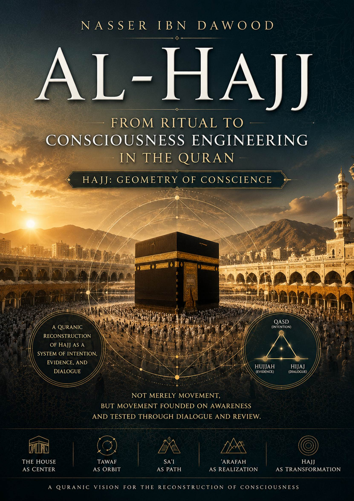
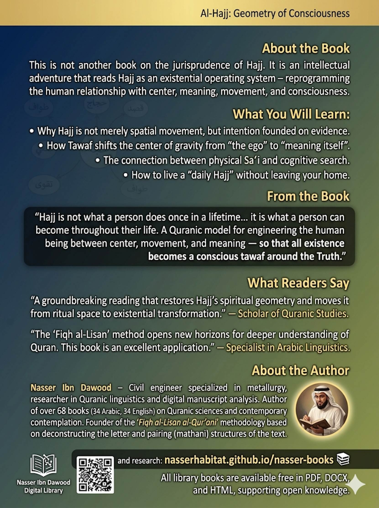

*A Condensed English Adaptation*
**Author:** Nasser Ibn Dawoud
**Digital Library:**
nasserhabitat.github.io/nasser-books
---
**Knowledge is a universal right.** The author
firmly believes that wisdom should not be locked behind paywalls or language
barriers.
- **Global Access Policy:** All books in this
library are available for free in multiple digital formats (PDF, HTML, DOCX,
TXT).
- **The Digital Library:** As of early 2026, the
collection hosts 68 volumes (34 in Arabic and 34 in English), fully optimized
for AI-assisted research and digital archiving.
- **Official Platforms:**
- Main
Website: nasserhabitat.github.io/nasser-books/
- GitHub:
nasserhabitat/nasser-books
This English edition is a
condensed conceptual adaptation. It is not a word-for-word translation, but
rather an **"extraction of essence."** It presents the core
philosophical framework in accessible English, omitting the exhaustive
linguistic debates and classical references found in the original Arabic text.
**For the academic researcher:** The original
Arabic version remains the primary source for comprehensive linguistic
analysis, detailed exegesis (Tafsir), and the complete bibliography.
---
For centuries, Hajj has been
understood in Muslim consciousness as a ritual – a set of physical actions
performed at a specific time and place. This understanding is correct at its
level, but it may be only one layer of a deeper semantic structure.
This book asks a provocative
question:
>
**Has the meaning of Hajj
exhausted itself at the ritual level?**
Or is what we perceive today
merely one stratum of a wider, deeper intentional structure?
The problem is not in the Quranic
text itself, but in the **tool** through which it has been read historically.
Hajj was fixed within a closed ritual framework, while the Quran may point to a
deeper dimension: one that transcends spatial movement toward **cognitive
movement**, and exceeds external action toward the **inner structure of consciousness**.
This project does not seek to
demolish traditional meaning, but to **reconstruct it within its holistic
horizon** – transforming understanding from an "isolated rite" into a
"moving cognitive structure" within the Quranic system.
---
Common understanding defines Hajj
as:
- A religious rite tied to specific time and
place
- Performed at the Kaaba in Mecca
But this understanding remains
partial if isolated from the deep linguistic structure of the root from which
the word derives.
The root **Ḥ-J-J** (ح ج ج) in Arabic does not only mean "intentional
direction" (qasd), but rather:
>
**Intentional direction founded on
evidence (hujjah) and realized through dialogic
argumentation (hijaj).**
Thus, Hajj is not merely physical
movement, but a **system** combining intention, proof, and dialogue.
| Branch | Meaning | Manifestation in Hajj |
|--------|---------|------------------------|
| **Al-Hajj** (القصد) | Intentional direction | Travel to the House,
Tawaf, Sa‘i |
| **Al-Hujjah** (البرهان) | Proof, evidence | Ihram as declaration of
intent, Standing at ‘Arafah as registration of presence |
| **Al-Hijaj** (الحوار) | Argumentation, dialogue | Talbiyah
(call and response), supplication, Takbir |
When these three dimensions are
brought together, a single structure emerges:
>
**Hajj = Qasd
(intention) + Hujjah (evidence) + Hijaj (dialogue)**
That is:
- Not mere movement
- But movement founded on awareness
- And awareness tested through dialogue and
review
---
#### The Apparent Level (Physical Ritual – The Muhkam)
- Journey to the Kaaba
- Commitment to rules: no obscenity, no
transgression, no futile argument
- Tawaf (circling), Sa‘i
(walking between Safa and Marwa), standing at ‘Arafah, stoning the pillars,
shaving or cutting hair
This level is the **primary
truth** that cannot be negated by interpretation.
#### The Deep Level (Existential Engineering – Built
upon the Muhkam)
- Inner transition: from blind imitation to
reasoned proof
- From dispersion to intentional direction
- From noise (rafath, fusuq, futile argument) to equilibrium
- Reset of the relationship with the center (the
House as symbol of absolute values)
The Quran does not present Hajj as
a ready-made definition, but as a concept formed within overlapping contexts.
It emerges as a **functional definition**:
>
**Hajj is an intentional movement
toward a semantic center where human consciousness is reconstructed within the
monotheistic system.**
---
The "House" is not
merely architecture, but a **semantic center** that organizes the movement of
meaning in the Quranic system.
- **Material center:** A specific place where
rituals are performed
- **Symbolic center:** The idea of monotheism as a
point of orientation for human existence
Thus, the House becomes not just a
place within Hajj, but the **condition for the very meaning of Hajj**.
If the House represents stability,
Tawaf represents **organized movement that defines stability itself**.
The root (T-W-F) indicates
circular movement drawn to a center – inseparable from it, never departing
definitively, but constantly returning.
**Tawaf as existential law:**
- No movement without a center
- No center without movement
- Movement is not separation but expression of
relationship with the center
Tawaf thus becomes a **Quranic
model for understanding the human relationship with meaning**: perpetual motion
around a stable origin.
**Existential reset mechanism:** Each cycle
dismantles accumulations of separation, reinserts the self into the general
orbit, and reconnects the part to the whole.
The root (S-‘-Y)
denotes not just walking, but **intentional movement toward a goal that
transforms desire into action**.
Sa‘i thus becomes:
- Transition from perception to application
- From awareness to actualization
- From center to extension
It is part of the "Quranic
engineering of the search for meaning" – truth is not only received but
sought and achieved.
In this analysis, Taqwa is not
reduced to fear, but understood as a deeper structure:
>
**An internal regulation system
that balances action and meaning.**
Taqwa becomes:
- Awareness of boundaries
- Behavioral regulation
- Reorganization of the relationship between
inner and outer
It is not merely a feeling, but an
**internal scale** governing human movement within the existential system of
Hajj.
Hajj operates within two temporal
layers:
- **The known months (ashhur
ma‘lumat):** Organized legislative time that defines
the framework of action
- **The numbered days (ayyam
ma‘dudat):** Dense time in which experience
transforms into high-concentration meaningful moments
Thus, Hajj becomes a **dual
temporal experience that reshapes human perception of time itself**.
These are not merely behavioral
rulings, but a **protective structure for consciousness** within the Hajj
experience:
- **Rafath:** Dismantling of seriousness, introduction of
uncontrolled instinct into sacred space
- **Fusuq:** Deviation from the general value
system that regulates action and meaning
- **Jidal:** Disturbance of cognitive purity, turning
Hajj into conflict rather than consciousness
They function as **mechanisms
protecting existential purity** within the Hajj experience.
The number 7 in Hajj is not read
as exaggerated symbolism, but as a structural reading:
Observed in:
- Tawaf (7 circuits)
- Certain ritual structures related to repetition
and organization
But the significance is not the
number itself, but its structural meaning:
>
**Organized repetition as a
mechanism for consolidating awareness of the center.**
Thus, the number becomes not a
mystical symbol, but:
- A model of organized repetition
- A tool for consolidating perception
- A structure for reestablishing meaning within
consciousness
---
In traditional reading, Hajj is
understood as an event occurring at specific time and place. But in this
conception, it is not an event, but:
>
**A cognitive-existential
operating system that resets the human being from within.**
Like computer operating systems –
not always visible to the user, but controlling:
- How understanding works
- Mechanism of interaction
- Form of perception
- Organization of inputs and outputs
Thus, Hajj becomes: **an
operational structure for human consciousness within the world.**
If Hajj is an operating system,
how does it manifest in daily life?
The answer lies not in repeating
rituals, but in **restoring their internal logic**:
- **The House →** Having a center in life (a
supreme value that regulates direction)
- **Tawaf →** Not scattering around multiple
centerless goals
- **Sa‘i →** Transforming meaning into continuous
action
- **Taqwa →** Internal balance regulating behavior
In this sense, "daily
Hajj" is:
>
**A way of living, not a season.**
The distinction here is essential:
- **Ritual:** An action performed
- **Transformation:** A structure being reshaped
In surface reading, Hajj is a
ritual. But in structural reading, Hajj is:
>
**A machine of existential
transformation for the human being.**
Each stage does not merely add a
new action, but changes:
- Way of thinking
- Way of perceiving
- Human relationship with self and world
The goal is not to perform Hajj,
but to **be reproduced within it.**
The concept of
"security" (amn) in Hajj cannot be reduced
to spatial security. It must be read as a structure of consciousness.
The sanctuary (haram) is not
merely a safe place, but:
>
**A model of a state of perception
free from internal threat.**
Security here transforms into:
- Security from internal chaos
- Security from cognitive contradiction
- Security from value dispersion
Thus, the
sanctuary becomes not only geography, but: **a state of consciousness
stability within itself.**
In material travel, provision is
food and means. But in Hajj, provision transforms into a deeper concept:
>
**“Take provision, for indeed the
best provision is Taqwa.”** (Quran 2:197)
Here the transformation occurs:
- From material provision → to existential
provision
- From bodily nourishment → to nourishment of
consciousness
- From resources → to internal ethical structure
Thus, Taqwa becomes not merely a
value, but: **humanity’s existential capital on its journey through life.**
---
Abraham represents in the Quranic
structure a central transition point between "hujjah"
(evidence) and "Hajj" as integrated systems.
Abraham is not merely a historical
figure, but a **Quranic model for the transformation of consciousness** – from
search for proof to the construction of ritual action that founds meaning.
**First: Abraham as the mind of Hujjah** – deconstruction of assumptions, questioning of
symbols, demand for certain knowledge.
**Second: Abraham as founder of Hajj** – the
decisive transformation from seeker of truth to establisher of a ritual that
re-presents truth. From knowledge → to practical embodiment of meaning.
**Third: Building the House as transformation of
meaning into center** – not merely architectural, but establishment of a
symbolic center around which collective consciousness is reorganized.
The Quran consistently links
"hujjah" with "tadabbur"
(deep contemplation) as mechanisms for producing consciousness:
- **Hujjah:** Not merely theoretical argument, but
disclosure of truth, deconstruction of falsehood, construction of certain
knowledge.
- **Tadabbur:** Transforming the text from information into
consciousness – transition from surface reading to structural perception of
internal relations of meaning.
Together they form: **a dual
Quranic system for building human consciousness.**
Purification in the Quran is not
reduced to physical cleanliness, but represents:
>
**Resetting the relationship
between the human being and the field in which they move.**
- Purification as removal of: internal
disturbance, conceptual interference, weight of negative accumulation.
- Purification as a condition for perceiving
meaning – impure consciousness cannot receive truth clearly.
Thus, purification becomes a
**structural condition for entering the Hajj system itself.**
The Quran presents Sa‘i as a recurring model of conscious human action:
>
**“And that there is not for man
except what he strives for.”** (Quran 53:39)
This text transforms Sa‘i into an existential rule: no actualization without
conscious movement.
Sa‘i combines: will, action, direction – not merely
physical movement, but **translation of awareness into reality.**
Taqwa in the Quran represents the
highest level in the existential structure of Hajj and the Quran generally:
- **Taqwa as monitoring consciousness:** not simple
fear, but continuous awareness of internal direction
- **Taqwa as balance structure:** internal
standard, self-evaluation system, regulation of relationship between action and
meaning
- **Taqwa as the conclusion of the Hajj system:**
All elements – Tawaf (awareness
around center), Sa‘i (action toward meaning), Taharah
(removal of disturbance), Hujjah (construction of
knowledge) – flow into Taqwa as:
>
**The final state of consciousness
stability within the guidance system.**
---
Hajj appears in traditional
consciousness as a "ritual" – a defined devotional act. But in the
structure presented, another dimension emerges:
**Hajj is not only a ritual performed, but
knowledge built through performance.**
- **Ritual as the body of meaning:** movement is
the body of the idea
- **Knowledge as the spirit of ritual:** if ritual
stops at its exterior, it becomes habit; if extended to its depth, it becomes a
system of perception
In Hajj, there is no separation
between action and understanding – each action is a form of knowledge, and each
knowledge is capable of being practiced.
If Tawaf appeared in Hajj as a
ritual movement, at this level it transforms into **a description of the human
being itself**:
- **Tawaf as existential model:** Humans do not
live in a straight line – they return to their values, circle their meanings,
constantly review their center
- **Tawaf as circular consciousness:** not linear
progress alone, but perpetual movement between experience and meaning
- **Human between center and movement:** not
separate from their center, not ceasing motion around it
Thus, the human being becomes: **a
tawaf-ing being – never stable except within
conscious movement around a fixed meaning.**
This axis represents the deep
philosophical structure of Hajj as an existential model:
- **Center of monotheism:** point of meaning
collection, direction reference, unity of perception – the idea that existence
has one center that reorganizes multiplicity
- **Circles of dispersion:** multiplicity without
center, movement without direction, knowledge without unity
- **Hajj as reorganization:** the process of
transferring the human being from circles of dispersion to the center of
monotheism – not merely spatial transition, but reconstruction of
consciousness, resetting of direction, reunification of the human interior
This is the
final conclusion of the entire project:
- **Place as beginning:** Hajj begins from a
specific place, but does not end there
- **Transcending place:** in deep structure, place
transforms into symbol, center, tool for producing meaning
- **Meaning as ultimate destination:** the goal is
not arrival at place, but arrival at a new state of perceiving existence
- **The final transformation:** Hajj in its
complete form is – from movement in place → to movement within meaning → to the
reshaping of the human being itself
---
The book does not end as a
closure, but as the beginning of a new understanding:
>
**Human beings are not static in
the world, but in perpetual motion toward a center of meaning that constantly
reshapes them.**
Hajj, as revealed in this book, is
not:
- A historical event
- Nor an isolated ritual
- Nor merely a legal system
But rather:
>
**A comprehensive Quranic model
for the engineering of human beings between center, movement, and meaning, so
that all of existence becomes a conscious tawaf around the Truth.**
---
*Nasser Ibn Dawoud*
*Condensed English Adaptation – 2026*
📚 **nasserhabitat.github.io/nasser-books**